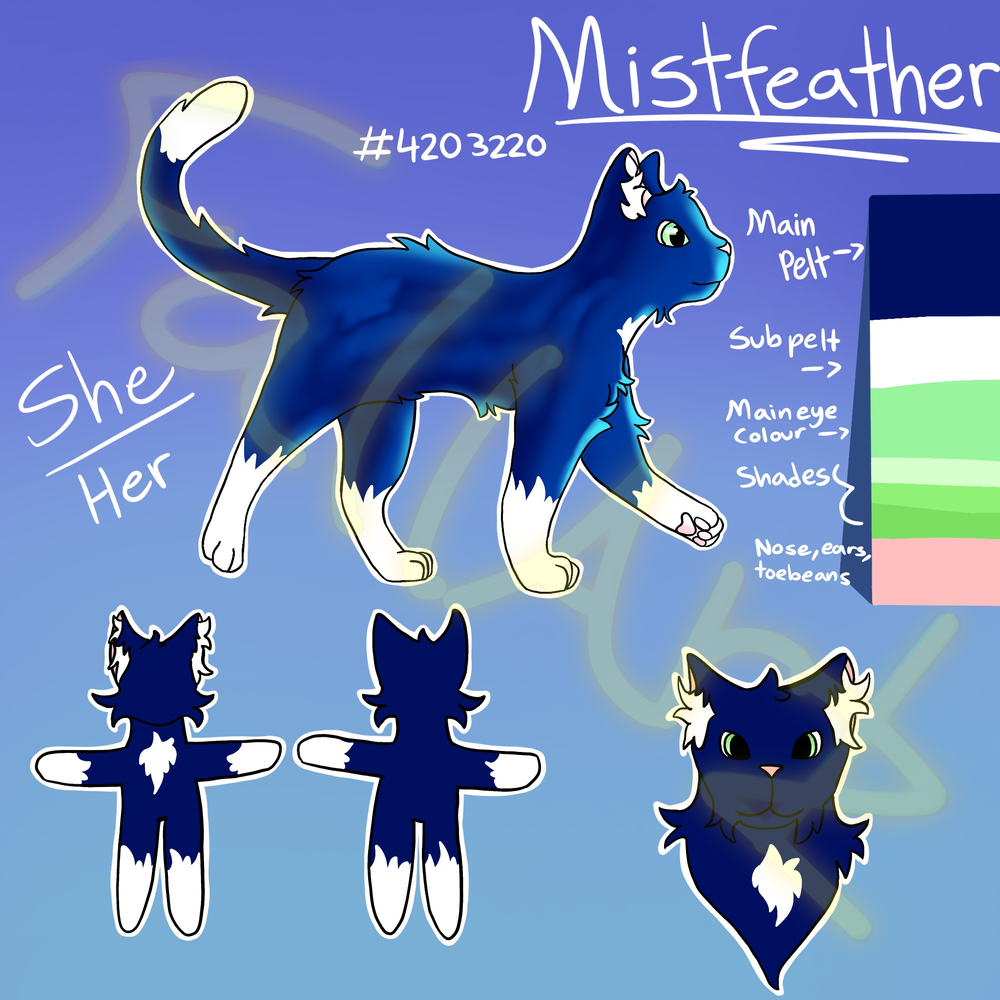

Mistfeather
A character from the Warrior Cats universe. She's smart and sure-footed–never hesitates to do things others would frown upon. Mistfeather struggles with apathy, and has little value for life. If she is told to kill she will do so without feeling any form of guilt.
She still has her own morals that keep her from becoming violent. Mistfeather is very loyal to her clan, and will listen to her peers. This makes her more of an asset than a danger to her clanmates.
Nevertheless, you would not want to cross her on a battlefield.